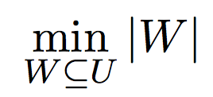

Motivation
Aligning nucleotide or amino acid sequences is a very common procedure in HIV computational analysis. An accurate alignment is the first step in making a proper and correct analysis of HIV datasets. Sequence alignments are essential for phylogenetic analysis tracing the epidemiology of HIV, but also for interpretations of drug resistance and data mining efforts, where correctly positioning nucleotides or amino acids of different strains with respect to each other is pivotal.
Objective
The strains of HIV-1 can be classified into three groups: the "major" group M, the
"outlier"
group O and
the "new" group N. More than 90% of HIV-1 infections belong to HIV-1 group M. Group M there are
known to be at least nine genetically distinct subtypes (or clades) of HIV-1. These are subtypes A,
B, C, D,
F, G, H, J and K.
Our objective here is to compare HIV-1 A and HIV-1 B virus by determining the
similarity
between
the
two.

Method
We selected two sequence of HIV-1 virus, A and B from HIV Sequence Database.
TGGAAGGGTTAATTTACTCCAGGAGAAGACAAGAAATCCTTGATCTGTGGGTCTACCACACACAAGGCTTCTTCCCTGATTGGCAGGAATACACACCAGGGCCAGGGGTTAGATACCCATTAACATTTGGATGGTGCTTCAAGCTAGTACCAGTTGATCCAGATGAGGTAGAGGGGGCTACTGAGGGAGAGAACAACAGCCTGTTACACCCGATATGTCAACATGGAATGGATGATGAGGAGAAAGAAGTATTAAAGTGGAAGTTTGACAGCCGCCTGGCACTAAAACACAGAGCCCAAGAGATGCATCCGGAGTTCTACAAGAACTGAAGAACTGCTGACACAGAAGTTGCTGACAGGGACTTTCTGATGGGGACTTTCCAGGGGAGGTGTGGTTTGGGCGGAGTTGGGGAGTGGCTAACCCTCAGATGCTGCATATAAGCAGCTGCTTCTCGCTTGTACTGGGTCTCTCTTGTTAGACCAGATCGAGCCTGGGAGCTCTCTGGCTAGCTAGGGAACCCACTGCTTAAGCCTCAATAAAGCTTGCCTTGAGTGCTTCAAGTAGTGTGTGCCCATCTGTTGTGACTCTGGTAACTAGAGATCCCTCAGACCTCTTTAGTCAGTGTGGAAAATCTCTAGCA
TGGATGGGCTAATTTACTCCCAAAAAAGACAAGATATCCTTGATTTGTGGGTCTACCACACACAAGGCTACTTCCCTGATTGGCAGAACTACACACCAGGGCCAGGGACCAGATTTCCACTGACCTTTGGATGGTGCTTCAAGCTAGTACCAGTTGAGCCAGAGAAGGTAGAGGAGGCTAATGAAGGAGAGAACAACTGCTTGTTACACCCTATGAGCCTGCATGGGATGGAGGACCCGGAGAAAGAAGTGTTAGTATGGAAGTTTGACAGCACCCTAGCATTCCATCACGTGGCCCGAGAGCTGCATCCGGAGTACTACAGAGACTGCTGACATTGAGCTTTCTACAAGGGACTTTCCGCTGGGGACTTTCCAGGGAGGCGTGGCCTGGGCGGGACTGGGGAGTGGCGAGCCCTCAGATGCTGCATATAAGCAGCTGCTTTTTGCCTGTACTGGGTCTCTCTGGTTAGACCAGATCTGAGCCTGGGAGCTCTCTGGCTAACTAGGGAACCCACTGCTTAAGCCTCAATAAAGCTTGCCTTGAGTGCTTCAAGTAGTGTGTGCCCGTCTGTTGTGTGACTCTGGTAACTAGAGATCCCTCAGACCCTTTTAGTCAGTGTGGAAAATCTCTAGCA
We compared the DNA strands of HIV-1A and HIV-1B using two different techniques –
Tool : Cluster Omega
Output
Sequence Alignment using cluster omega

| Gaps | 12 |
| Mismatches | 87 |
| Similarity | 544 |

Tool : Needle
Output
Pairwise Alignment using needle


Conclusion
Even though HIV1A and B originate from different regions viz. Subtype A is common in West Africa while Subtype B is the dominant form in Europe, the Americas, Japan, Thailand, and Australia, The sequence alignment results show a similarity of 85-86% position with 12-16 gaps and ~82-87 mismatches.
Bibliography
- Ana Abecasis, Anne-Mieke Vandamme, and Philippe Lemey. Sequence Alignment in HIV Computational Analysis.
- Melsted, Páll, and Jonathan K. Pritchard. Efficient Counting of K-mers in DNA Sequences Using a Bloom Filter. BMC Bioinformatics 12.1 (2011): 333. Web.
Contributors


An Exact Algorithm to Compute the DCJ Distance for Genomes with Duplicate Genes
Mingfu Shao, Yu Lin, and Bernard Moret
Laboratory for Computational Biology and Bioinformatics, EPFL, Lausanne, Switzerland
Department of Computer Science and Engineering, University of California, San Diego,
La Jolla, California
{mingfu.shao,yu.lin,bernard.moret}@epfl.ch
Department of Computer Science and Engineering, University of California, San Diego, La Jolla, California
{mingfu.shao,yu.lin,bernard.moret}@epfl.ch
The double-cut-and-join (DCJ) model has been used to calculate edit distance between two genomes
for quite a long time. Optimizing edit distance problem forms an integral part to solve basic
problems for genome evolution. Shao, Lin, and Moret proposes an Integer Linear Programming approach
to tackle a specific case of genomes i.e. genomes with duplicate genes. This problem can be solved
in linear time for genomes without duplicate genes but has been proved NP-Hard for genomes with
duplicate genes by a reduction from NP-Hard problem of Breakpoint Graph Decomposition.
The authors define this problem as to find a valid bijection between two genomes with
duplicate gene content that minimizes the DCJ distance between them. When there is a consistent
decomposition with c cycles and o odd-length paths, DCJ operations needed to transform
genome G1 to G2 is given by (|V|/4 − c − o/2). Hence to minimize total DCJ operations,
maximize (c + o/2) over the space of all consistent decompositions. This reduces the problem
to maximum cycle decomposition problem which is further formulated as an Integer Linear
Program. The ILP formulation has O|E| variables, O|E| constraints and maximizes the number of
cycles.
Authors have devised a preprocessing algorithm to reduce complexity while preserving
optimality of DCJ distance computing algorithm. The combined approach is crucial for comparing
genomes with duplicate genes as they are commonly observed in most species.
Authors claim a bold assumption that after a speciation event, only DCJ operations are
involved. This is unrealistic and is only used to simplify the problem.
Kinship inference of a population is an indispensable component of understanding genetic relatedness or coefficient of relationship. It helps biologists to understand more profoundly how traits inherit from parents to their offspring. It also includes study of mating process so as to correctly construct relationship between a parent and its offspring. One of the major steps in kinship analysis is the formalization of biological problems into computational problems which can then be solved using statistical or combinatorial approaches [1].
Various biological problems pertaining to kinship inference have already been formalized including but not limited to MIN-PARENT Problem [2], MIN MATING Problem and Parentage assignment problem.
Formalization of these problems have been very helpful to biologists for analyzing consanguinity and evolution of genetic traits among different generations. We have not been able to completely analyze these processes by only finding the minimum number of parents. There are many variances of these problems which are yet to be formalized and classified into easy and hard categories.
We aim to formalize different variances of these problems using various constraints and restrictions. Our focus is mainly to formalize Full Sibling Reconstruction and Parentage Assignment Problem. We propose to define and impose a set of constraints in order to generate different variances of the above problems. For example, Full Sibling Reconstruction problem can be constrained on the mating process, whereas Parentage Assignment Problem’s variances can be constructed on the basis of unbalanced sex ratios or minimizing the number of females. We are also aiming to classify these problems into easy or hard categories accordingly.
Investigation of many fundamental biological phenomena including mating systems, selection and adaptation, kin selection, and dispersal patterns depends on the growing development and application of molecular markers. The power and potential of the genotypic information obtained in these studies often rests in our ability to reconstruct genealogical relationships among individuals. Formalization of these problems will prove to be a great advantage for above studies.
Bibliography
[1] Mary V. Ashley, Tanya Y. Berger-Wolf, Isabel C. Caballero, Wanpracha Chaovalitwongse, Bhaskar DasGupta, and Saad I. Sheikh. Full Sibling Reconstruction in Wild Populations from Microsatellite Genetic Markers.
[2] Ashley, Mary V., Tanya Y. Berger-Wolf, Wanpracha Chaovalitwongse, Bhaskar Dasgupta, Ashfaq Khokhar, and Saad Sheikh. On Approximating an Implicit Cover Problem in Biology. Algorithmic Aspects in Information and Management Lecture Notes in Computer Science (2009): 43-54. Web.
Formalizing Biological Problems for Kinship Inference
Introduction and Motivation
Kinship inference of a population is an indispensable component of understanding genetic relatedness or coefficient of relationship. A natural field biology question is to characterize genealogical relationships in wild populations, such as which organisms are siblings. Biologists want to know how individuals survive, acquire mates, reproduce, and disperse to new populations. It helps biologists to understand more profoundly how traits inherit from parents to their offspring. It also includes study of mating process so as to correctly construct relationship between a parent and its offspring. One of the major steps in kinship analysis is the formalization of biological problems into computational problems which can then be solved using statistical or combinatorial approaches.
This project presents generalized formalizations of biological problems. In this project we are only concerned with full sibling relationship from single generation sample of microsatellite markers. The formalizations defined use the Mendelian inheritance rules to impose constraints on genetic content possibilities of a sibling group. The formalizations of the inferred constraints under the parsimonious assumption of minimum number of parents leads to minimum MIN-PARENT problem. Variations of these MIN-PARENT problems are defined in this project.
Formulations
Sibling Reconstruction Problem
Given a genetic (microsatellite) sample from a population of n diploid individuals of the same generation, U, the goal is to reconstruct the full sibling groups (groups of individuals with the same parents). We assume no knowledge of parental information.
Formally, we are given a set U of n individual microsatellite samples from l genetic loci
MIN-PARENT Problem
Given the Mendelian constraints, our goal is to cover the Universe U by a set of full-sibling groups under the parsimonious assumption of a minimum number of parents. Formally, the MIN-PARENT problem is defined as follows:
Standard Terminologies
Assuming, our polynomial time oracle O answers following queries:
- Given a subset U' of Universe U, does U' form a valid sibling set following Mendelian constraints.
Below are the formulations of variations of MIN-PARENT problem:
The goal of this problem is to find a minimum set of parents for a given sibling partition of the universe and a candidate set of parents having monogamous mating process.
Input:- Partition A
- Set of possible parents P
- Universe U
- Monogamous Mating Process
Under monogamous constraints, number of minimum set parents set will always be equal to minimum sibling sub groups.
Hence, these problems are equivalent, but not vice-versa. We prove this in the following lemma.
Lemma: If minimum number of matings is equal to the number of full-sibling sub groups, then it does not necessary imply monogamy.
Proof: Suppose we have a set of parents P,
And a partition set A, for which each set S in A is a sibling set.
Using our oracle O, we find the parents of partition set A.
We get the following results:
B(S2) = (A, D)
B(S3) = (A, E)
Here we have 3 matings, which is equal to the number of full-sibling sub groups we originally have. And we can clearly observe that the mating process is not Monogamous as parent 'A' is shared with 2 sibling sets, i.e. S2 and S3.
The goal of this problem is to find a minimum set of parents for a given sibling partition of the universe and a candidate set of parents having polygynous or polyandrous mating process.
Input:- Partition A
- Set of possible parents P
- Universe U
- Polygynous and Polyandrous Mating Process
Under polygynous or polyandrous mating constraints, this problem is easy when compared to full-sibling reconstruction problem.
The goal of this problem is to find a minimum set of parents for a given sibling partition of the universe and a candidate set of parents having promiscuous mating process.
Input:- Partition A
- Set of possible parents P
- Universe U
- Promiscuous Mating Process
Under promiscuous mating process, this problem is very hard when compared to full sibling reconstruction problem.
Depending upon the given input, this problem can be formulated in two different ways:
Definition - 1:Given a set of mothers and their offspring, the goal of this problem is to minimize the number of fathers required to produce those offspring.
Input:- Set of possible fathers W = {w1, w2, w3 ... }
- Set of mothers V = {v1, v2, v3 ... }
- Set of offspring S = {s1, s2, s3 ... }
such that,
v1 is the mother of offspring set s1,
v2 is the mother of offspring set s2, and so on ...
- Polyandrous and Monogamous Mating process
Definition - 2:
Given a set of offspring and a set of possible mothers, the goal of this problem is to minimize the number of parents required to produce those offspring.
Input:- Set of possible mothers V = {v1, v2, v3 ... }
- Set of offspring S = {s1, s2, s3 ... }
- Polyandrous and Monogamous Mating process
Relation with Sibling Reconstruction:
Under polyandrous or monogamous mating constraints, the minimum number of fathers required to produce these offspring will be equal to the number of full sibling sub groups.
Hence, this problem is easy when compared to MIN-PARENT problem.
Given a set of offspring and a set of possible mothers, the goal of this problem is to minimize the number of parents required to produce those offspring.
Input:- Set of possible fathers W = {w1, w2, w3 ... }
- Set of possible mothers V = {v1, v2, v3 ... }
- Set of offspring S = {s1, s2, s3 ... }
- Polygynous Mating process
Since, the mating process is polygynous, therefore the formulation of this problem would be just to minimize the number of fathers required to produce the offspring with no constraints.
Objective for minimization: 